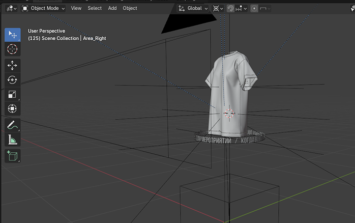
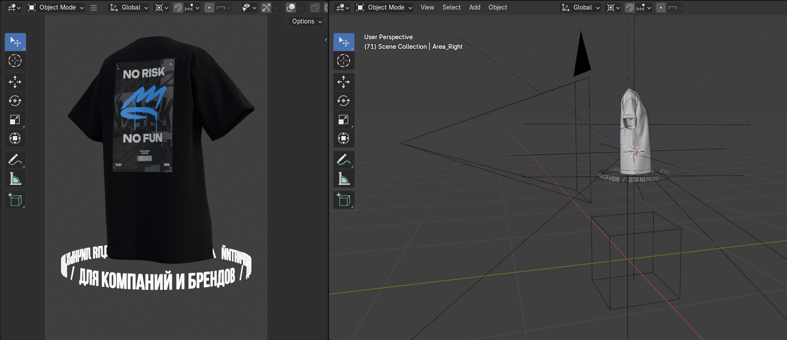
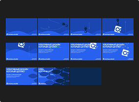
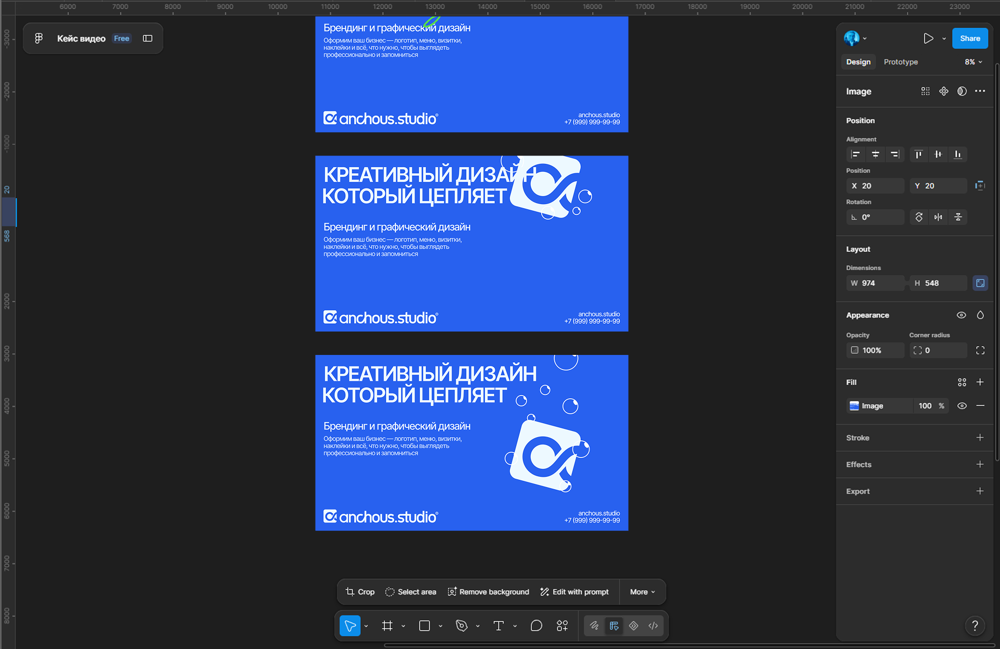
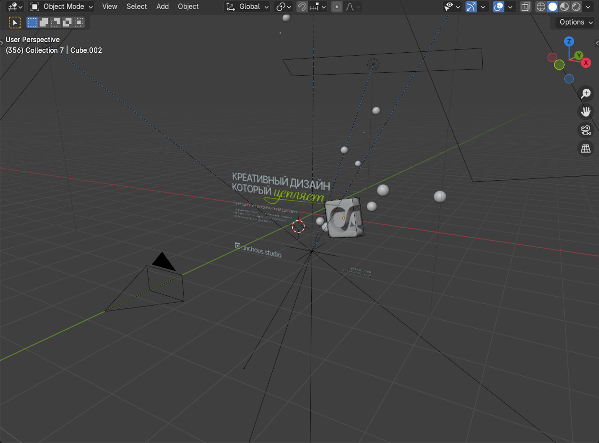
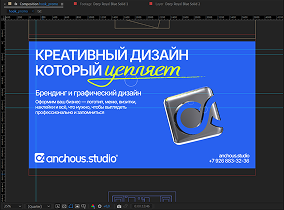
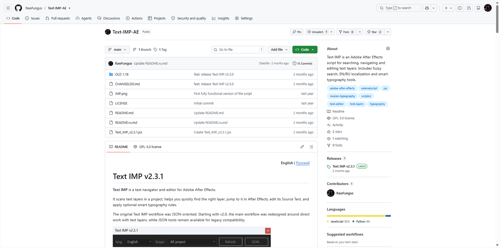

Merch Ad
3D Product Motion


Задача
У студии появился доступ к сети городских экранов. За короткий срок нужно было собрать несколько рекламных материалов, которые одновременно продвигают услуги студии и заполняют эфир.
Подход
В основе — вращающаяся 3D-модель футболки с отсылкой к Quake и эстетике ранних 2000-х. Простое движение оставляет внимание на сообщении, а бесшовный loop позволяет занимать несколько эфирных слотов без заметной склейки.
Раскадровка → Figma → Blender → Render → After Effects → Final
Hook Promo
3D Brand Motion




Задача
Сделать экспериментальный ролик, который передаёт характер студии и выделяется в потоке преимущественно статичной рекламы на информационных экранах.
Подход
Собрал короткий сюжет и раскадровку, где движение удерживает внимание и постепенно приводит зрителя к контактам студии.
Раскадровка → Figma → Blender → Render → After Effects → Final
Placeholder Ads
2D Motion
Задача
Закрыть пустые слоты в трансляции на информационных стойках и одновременно ненавязчиво продвигать услуги клиента.
Подход
Простые зацикленные композиции постоянно держат экран в движении: показывают, что он активен, и на короткое время цепляют взгляд без ощущения отдельного рекламного ролика.
Text IMP
Custom AE Tool

Задача
Для серии видео-тренировок был нужен шаблон с большим количеством текста, который регулярно менялся от ролика к ролику.
Подход
Чтобы не редактировать десятки текстовых слоёв вручную, я собрал инструмент для After Effects, который позволяет менять весь текст проекта из одного окна.
Почему свой инструмент
Готовые решения не полностью подходили под этот workflow, а часть коммерческих инструментов была неудобна из-за региональных и платёжных ограничений. Для конкретной задачи оказалось проще собрать собственный инструмент.